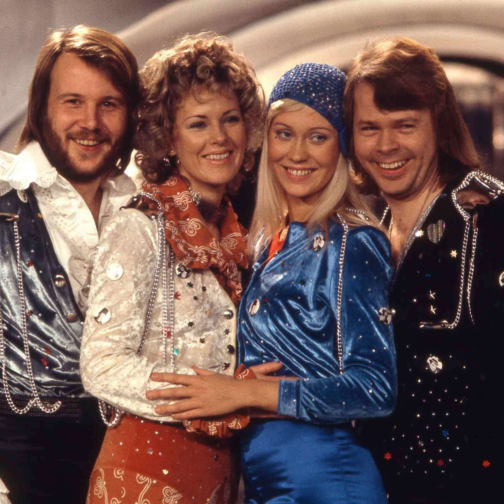
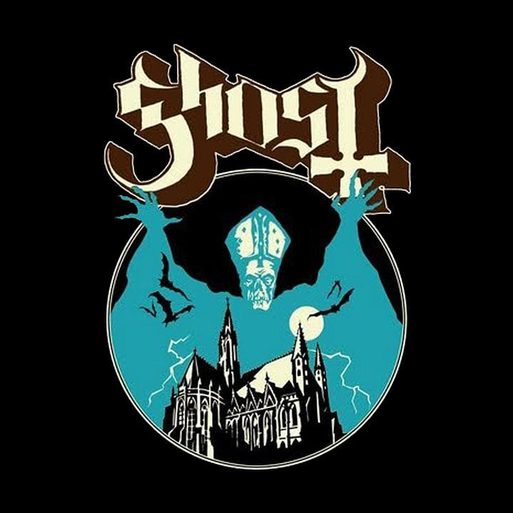

Mine personlige interesser
I rekkefølge av hva som er viktigst
Musikk
Fotball
Videospill
Musikk
Jeg hører mye på musikk, spesielt etter at jeg begynte på Mailand VGS, nå hører jeg på det nesten hver gang jeg har muligheten.
Jeg hører mest på rock og metall, men jeg hører også på en del pop, mainstream pop og litt pop på andre språk, takket være eurovision.
Favoritt artistene mine er nok:
Rammstein 
Muse 
ABBA 
Pink Floyd 
The Rolling Stones 
Ghost 
Denne listen kommer til å variere mye
Min spilleliste: Spotify
Fotball
Jeg har sett på fotball siden EM 2024, som holdt på når jeg var på ferie i Spania. Siden da så har jeg sett på Serie A (Italiensk fotball) hver uke. laget mitt er AC Milan
AC Milan er en italiensk storklubb fra Milano, Italia. Milan er en av de mestvinnede klubbene både i Italia og i Europa, og har hatt mange legendariske spillere gjennom tidene.
AC Milan sin nylige kamprekord: Fotmob
Videospill
Jeg liker å spille videospill, de jeg har spilt mest er:
Minecraft
Roblox
Pokemon (Shield, Scarlet, Brilliant Diamond, Legends: Arceus, Legends: Z-A)
TABS
JWE 1, 2 og 3